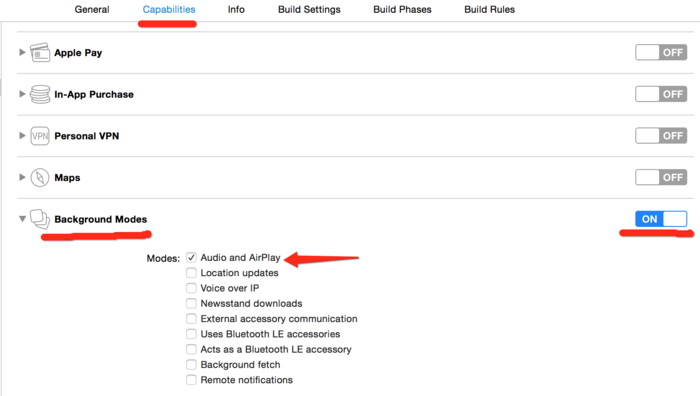

按公司需求需要对音频文件进行后台播放,借此机会对音频播放做了个总结.主要针对 AVPlayer 进行详细说明.
iOS 各播放器比较
| 名称 | 使用环境 | 优点 | 确点 |
|---|---|---|---|
| System Sound Services | AVFoundation | C语言的底层写法，节省内存 | 支持的格式有限，音量无法通过音量键控制，而且播放方式单一。 |
| AVAudioPlayer | AVFoundation | 抒写效率更高，基本上支持所有的音频格式，对播放的控制，如循环播放，声音大小，暂停等比较方便。 | 对内存的消耗会多些。不支持流式，即无法播放在线音乐。 |
| AVPlayer | AVFoundation | 可以播放音视频,可播放在线音乐,使用灵活 | |
| MPMoviePlayerController | MediaPlayer | 简单易用 | 不可定制 |
| AVPlayerViewController | AVKit | 简单易用 | 不可定制 |
| IJKPlayer | IJKMediaFramework | 定制度高，支持流媒体播放 | 使用稍复杂 |
AVPlayer 使用
简介
AVPlayer 是iOS上常用的视频播放器组件，支持常见的音视频格式,支持流播放,可以播放在线音乐.
支持视频格式： WMV，AVI，MKV，RMVB，RM，XVID，MP4，3GP，MPG等。
支持音频格式：MP3，WMA，RM，ACC，OGG，APE，FLAC，FLV等。
相关类
- AVPlayer：播放器,控制播放器的播放，暂停，播放速度.
- AVURLAsset : AVAsset 的一个子类，使用 URL 进行实例化，实例化对象包换 URL 对应视频资源的所有信息.
- AVPlayerItem：管理资源对象，提供播放数据源.
- AVPlayerLayer：负责显示视频，如果没有添加该类，只有声音没有画面.
简单使用
使用 url 创建 AVPlayer
1 | let player = AVPlayer(url: URL(string: "http://www.xxxx.mp3")) |
使用 AVPlayerItem 创建 AVPlayer
1 | if let url = URL(string: "http://www.***.mp3") { |
AVPlayer 控制播放
1 | player.play() // 播放 |
通过通知监听播放状态变化
1 | //播放完成 |
监听播放进度
1 | // 添加周期时间观察者 一秒执行一次 block |
AVPlayerItem 创建
1 | // 使用 AVAsset 创建 |
监听 AVPlayerItem 状态和缓存进度
1 | // 监听 playerItem 状态变化 |
1 | override func observeValue(forKeyPath keyPath: String?, of object: Any?, change: [NSKeyValueChangeKey : Any]?, context: UnsafeMutableRawPointer?) { |
音频后台播放
开启所需后台模式
选中Targets–>Capabilities–>BackgroundModes–>ON,
并勾选Audio and AirPlay选项，如下图:

或者 plist 文件添加如下字段:
利用 AVAudioSession 申请后台播放权限
1 | let session = AVAudioSession.sharedInstance() |
在播放控制界面接受远程控制(Remote Control)
开启远程控制
1 | // 声明接收Remote Control事件 |
设置 Remote Control 响应
1 | // 响应 Remote Control事件 |
移除 Remote Control 响应
1 | // 在关闭播放页面时记得移除 |
通过重写父类方法响应外部事件
- 开启接受远程控制
- 使当前页面成为第一响应者
重写 remoteControlReceivedWithEvent 方法. UIEvent Type 取值:
- UIEventSubtypeRemoteControlTogglePlayPause // 暂停
- UIEventSubtypeRemoteControlPreviousTrack // 上一首
- UIEventSubtypeRemoteControlNextTrack // 下一首
- UIEventSubtypeRemoteControlPlay // 播放
- UIEventSubtypeRemoteControlPause // 暂停
关闭接受远程控制
锁屏页面显示播放信息(Now Playing Center)
使用 MPNowPlayingInfoCenter 设置锁屏页面音乐信息.
1 | func setLockScreenPlayingInfo(_ info: YTTMediaInfo) { |
注意: MPNowPlayingInfoPropertyElapsedPlaybackTime 设置的并不是时时的,他是根据你设置的值进行计时的,如果想要在锁屏页面得到准确的时间,请及时刷新 MPNowPlayingInfoPropertyElapsedPlaybackTime 的值.当暂停时要暂停播放时间,只需将 MPNowPlayingInfoPropertyPlaybackRate 设置为 0.播放时设置回 1.
补充说明
iOS 对后台管理十分严格,任何 app 都有大约3分钟或者10分钟的后台执行时间.3分钟或者10分钟后, app 就会被强制挂起.使用 AVAudioSession 申请后台权限时,可以保证播放本地音乐能在后台长久播放,当播放网络音乐时就会出现不能播放情况,针对这情况使用了 beginBackgroundTask 设置后台任务 ID,通过这种方式我们大约可以获得额外的 10 分钟来执行后台任务.为了能无限后台播放网络音乐添加计时器,当即将挂起时再次申请后台任务 ID.
1 | func applicationDidEnterBackground(_ application: UIApplication) { |